We Solve Murders
A standalone mystery from Richard Osman, following a famous author and a bodyguard who get pulled into a murder case while on the run.
Reading
Books I’ve read or listened to, along with notes and summaries.
A standalone mystery from Richard Osman, following a famous author and a bodyguard who get pulled into a murder case while on the run.

A Jack Reacher story where Reacher steps in to help an elderly man and ends up caught in a war between two rival gangs.

Book two of the Thursday Murder Club series, as the retirees are pulled into a new case when a dangerous figure from Elizabeth’s past turns up.

Book three of the Dungeon Crawler Carl series, continuing Carl and Princess Donut's fight to survive the dungeon.

Book two of the Dungeon Crawler Carl series, following Carl and Princess Donut deeper into the game-show dungeon built beneath a demolished Earth.

A darkly funny litRPG survival story where Carl and his cat Princess Donut fight for their lives through a dungeon built beneath the ruins of Earth.

A cozy mystery about four retirees in a British retirement village who reopen a cold case and outwit the professionals investigating a new murder.
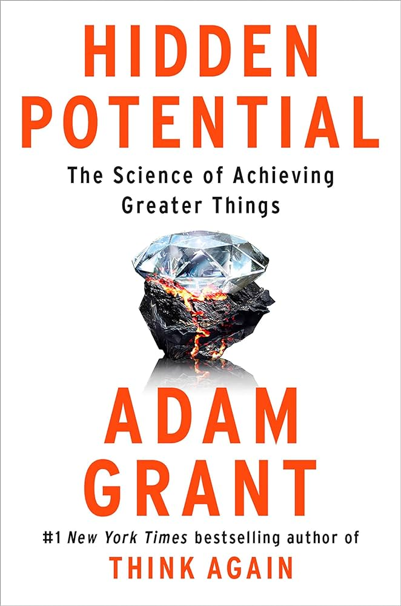
A book about being our best and producing at a high level. Key ideas include getting comfortable with discomfort, failing often, avoiding perfectionism, and learning through teaching.
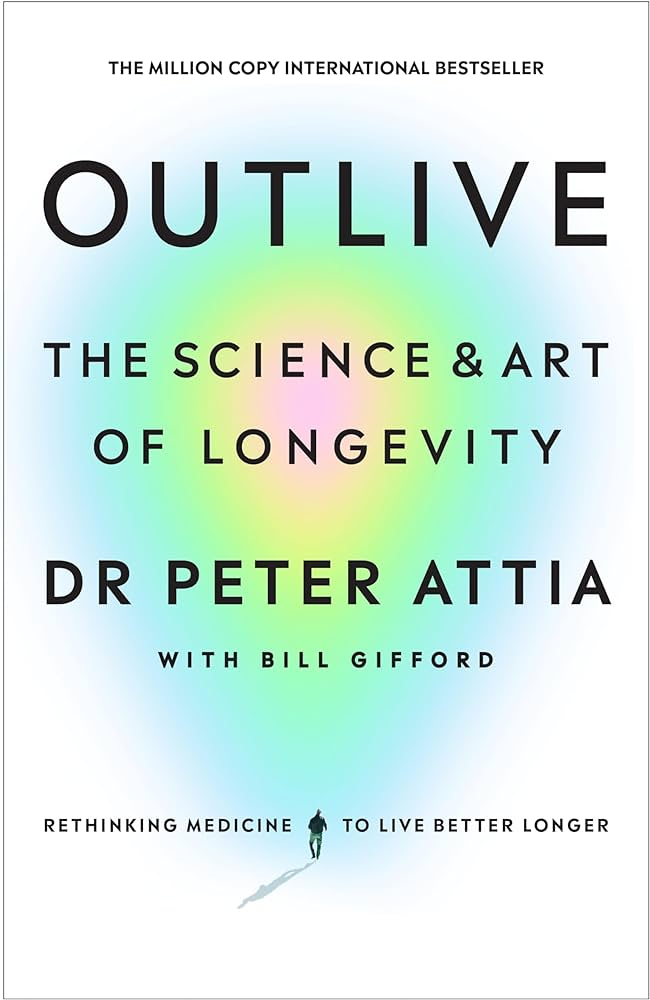
A book about expanding lifespan and healthspan, including focus on exercise, sleep, nutrition, strength, and VO2 max.
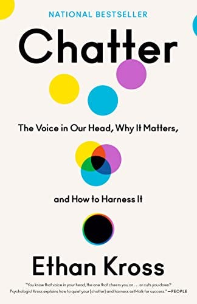
A book about inner dialogue, rumination, and practical techniques to create distance and regain perspective.
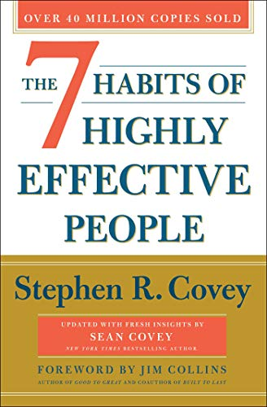
A classic on moving from individual effectiveness to team effectiveness through seven foundational habits.
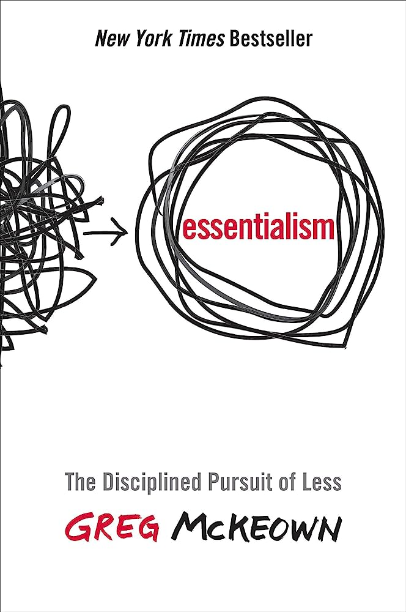
A book about deliberately focusing on what matters most and removing what doesn't.
Another Jack Reacher story focused on tracking down a rogue sniper in Paris.
A Jack Reacher story with undercover work against a drug dealer and an old nemesis.
A book about the 1918 influenza outbreak and the state of medicine at that time.
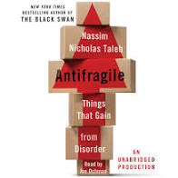
A book about how people and systems can benefit and grow from volatility and uncertainty.
A Reacher story involving the search for an army veteran caught in an opioid ring.
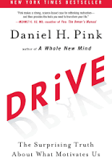
A book about motivation. Key theme: intrinsic motivation tends to outperform carrot-and-stick for creative work.
Book summary ↗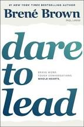
A leadership book centered on courage, vulnerability, and values-based leadership.
Book summary ↗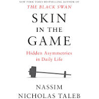
A book about responsibility and the importance of having real stake in the outcomes you advocate.
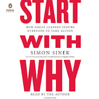
How successful companies and leaders inspire by clarifying and communicating purpose.
Book summary ↗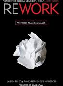
A practical take on building companies by staying focused, keeping things simple, and avoiding unnecessary complexity.
Book summary ↗A biography of Leonardo da Vinci with emphasis on curiosity across many disciplines.
Book summary ↗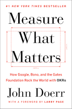
A book on OKRs, including focus, alignment, accountability, tracking, and stretch goals.
Book summary ↗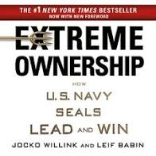
A leadership book based on owning outcomes, simplifying plans, decentralized command, and prioritizing execution.
Book summary ↗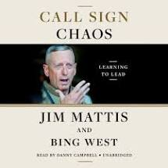
Leadership lessons from military service across direct, executive, and strategic leadership levels.
Book summary ↗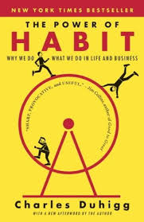
A practical exploration of habit loops and how to intentionally change habits.
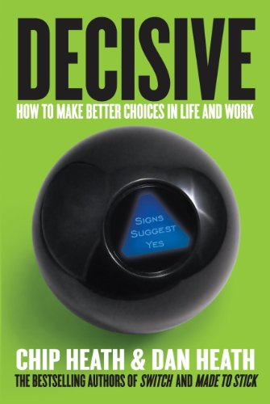
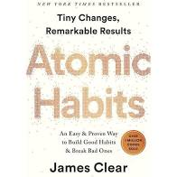
A book about compounding small habits into meaningful long-term outcomes.
Book summary ↗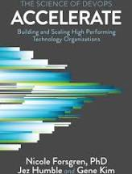
Evidence-based insights on software delivery performance and organizational outcomes.
Book summary ↗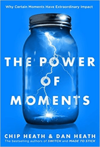
A book about how memorable moments are created, including the EPIC model: Elevation, Pride, Insight, and Connection.
Book summary ↗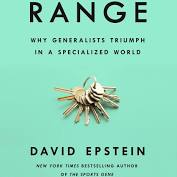
A case for broad learning and cross-domain thinking over narrow specialization.
Book summary ↗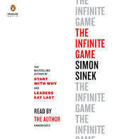
A long-term mindset for leadership focused on trust, loyalty, and mission over short-term wins.
Book summary ↗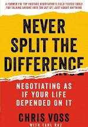
Negotiation principles from a former FBI hostage negotiator with practical examples for work and life.
Book summary ↗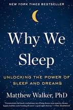
A deep dive into sleep science and the physical and cognitive cost of sleep deprivation.
Book summary ↗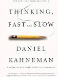
A classic on cognitive biases and how human decision making often departs from strict rationality.